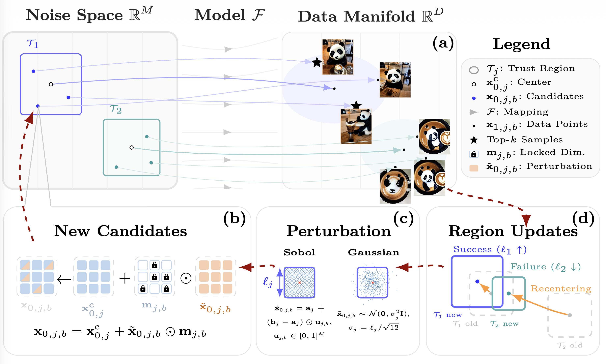
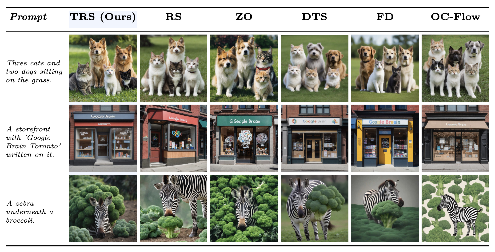
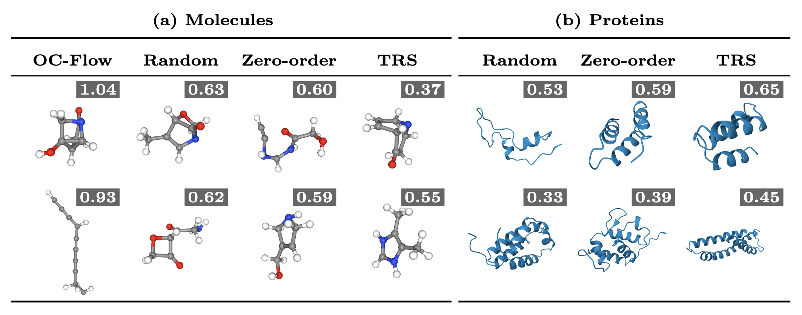
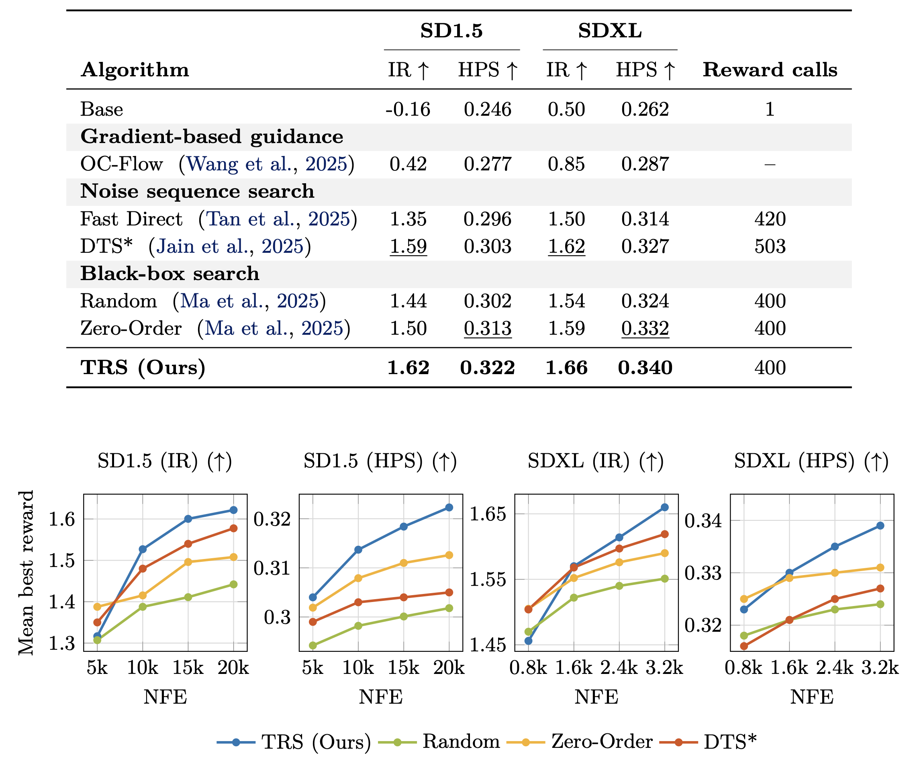
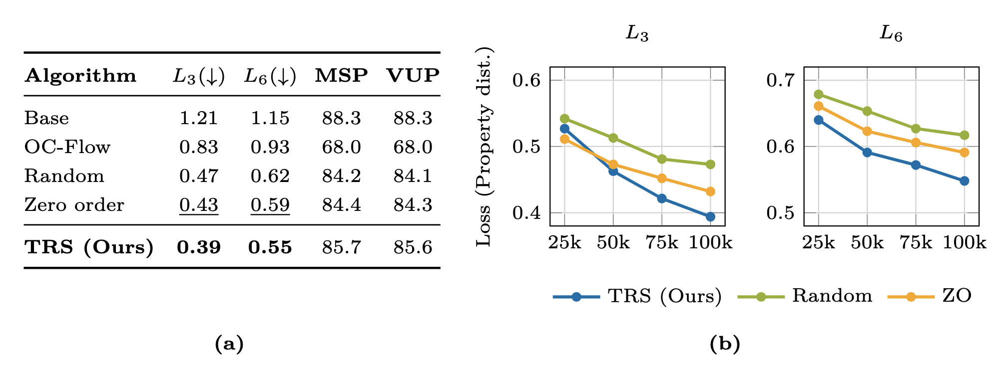
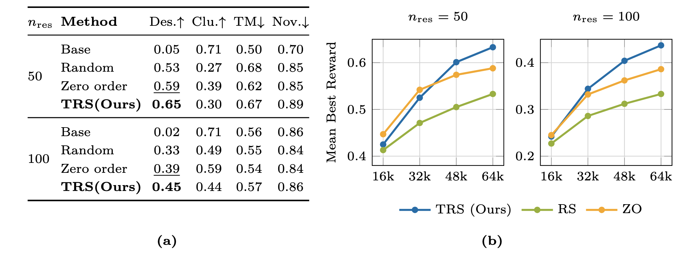

Diffusion and flow models generate outputs from random noise. What if we could search for better noise? TRS does exactly that: it treats the generative model and any reward function as black boxes, and uses a trust-region search to find noise inputs that produce higher-reward outputs — without retraining or backpropagating through anything.
Key highlights
Optimizing the noise samples of diffusion and flow models is an increasingly popular approach to align these models to target rewards at inference time. However, we observe that these approaches are usually restricted to differentiable or cheap reward functions, the formulation of the underlying pre-trained generative model, or are memory/compute inefficient. We instead propose a simple trust-region based search algorithm (TRS) which treats the pre-trained generative and reward models as a black-box and only optimizes the source noise. Our approach achieves a good balance between global exploration and local exploitation, and is versatile and easily adaptable to various generative settings with minimal hyperparameter tuning. We evaluate TRS across text-to-image, molecule and protein design tasks, and obtain significantly improved output samples over the base generative models and other inference-time alignment approaches which optimize the source noise sample, or even the entire reverse-time sampling noise trajectories in the case of diffusion models.
A generative model maps a noise vector to an output — an image, a molecule, a protein. Change the noise and you change the output. Some noise inputs lead to outputs that score much higher on a given reward. TRS finds them.
TRS starts by sampling random noise vectors, evaluating them, and selecting the top-k as starting points. It then maintains a “trust region” around each — a local neighborhood where it proposes new candidates by perturbing a random subset of noise dimensions. Regions that find improvements expand; those that stall contract. After each iteration, all regions re-center on the globally best noise vectors, naturally shifting from broad exploration toward focused exploitation.
Because TRS only modifies the source noise and never touches the model internals, generated samples stay on the learned data manifold — avoiding the drift problems of gradient-based methods.






Mean best rewards and scaling curves. TRS consistently scores highest under the same compute budget across all domains.
@misc{schweiger2026trustregionnoisesearchblackbox,
title={Trust-Region Noise Search for Black-Box Alignment of Diffusion and Flow Models},
author={Niklas Schweiger and Daniel Cremers and Karnik Ram},
year={2026},
eprint={2603.14504},
archivePrefix={arXiv},
primaryClass={cs.LG},
url={https://arxiv.org/abs/2603.14504},
}